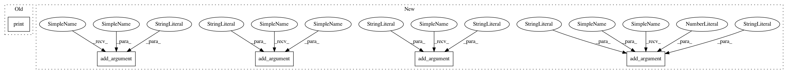

36ce15cd6b8d07cb87e4e416b304d052c343adb5,examples/transformer/hyperparams.py,,load_hyperparams,#,22
Before Change
args.length_bucket_step,
drop_long_sequences=True,
)
print("train_src:{}".format(args.train_src))
print("dev src:{}".format(args.dev_src))
train_dataset_hparams = {
"num_epochs": args.eval_interval_epoch,
//"num_epochs": args.max_train_epoch,
After Change
For devendra data loader
argparser.add_argument("--input", type=str, default="temp/run_en_vi_bpe/data")
argparser.add_argument("--data", type=str, default="processed")
argparser.add_argument("--wbatchsize", type=int, default=3000)
argparser.add_argument("--epoch", type=int, default=15)
argparser.add_argument("--start_epoch", type=int, default=0)
//argparser.add_argument("--max_train_size", type=int, default=60)
//argparser.add_argument("--max_eval_size", type=int, default=30)
//argparser.add_argument("--max_test_size", type=int, default=10)
// -------------------------------------------------//
argparser.add_argument("--max_seq_length", type=int, default=256)
argparser.add_argument("--mode", type=str,
default="train_and_evaluate",
help="can also be test mode")
argparser.add_argument("--src_language", type=str, default="en")
argparser.add_argument("--tgt_language", type=str, default="de")
argparser.add_argument("--filename_prefix", type=str, default="processed.")
argparser.add_argument("--debug", type=int, default=0)
argparser.add_argument("--draw_for_debug", type=int, default=0)
argparser.add_argument("--average_model", type=int, default=0,
help="currently not supported")
argparser.add_argument("--model_dir", type=str, default="default")
argparser.add_argument("--model_filename", type=str, default="")
argparser.add_argument("--verbose", type=int, default=0)
argparser.add_argument("--zero_pad", type=int, default=0)
argparser.add_argument("--bos_pad", type=int, default=0,
help="use all-zero embedding for bos")
argparser.add_argument("--data_dir", type=str,
default="/home/shr/t2t_data/")
argparser.add_argument("--batch_size", type=int, default=4096)
argparser.add_argument("--test_batch_size", type=int, default=32)
argparser.add_argument("--eval_steps", type=int, default=1000)
argparser.add_argument("--min_length_bucket", type=int, default=9)
argparser.add_argument("--length_bucket_step", type=float, default=1.1)
argparser.add_argument("--max_training_steps", type=int, default=250000)
argparser.add_argument("--warmup_steps", type=int, default=16000)
argparser.add_argument("--lr_constant", type=float, default=2)
argparser.add_argument("--max_train_epoch", type=int, default=70)
argparser.add_argument("--random_seed", type=int, default=1234)
argparser.add_argument("--log_disk_dir", type=str)
argparser.add_argument("--beam_width", type=int, default=5)
argparser.add_argument("--alpha", type=float, default=0.6,\
help=" length_penalty=(5+len(decode)/6) ^ -\alpha")
argparser.add_argument("--save_eval_output", default=1, \
help="save the eval output to file")
argparser.add_argument("--eval_interval_epoch", type=int, default=1)
argparser.add_argument("--load_from_pytorch", type=str, default="")
argparser.add_argument("--affine_bias", type=int, default=1,
help="for devendra, it"s 1; fot t2t , it"s 0")
argparser.add_argument("--eval_criteria", type=str, default="bleu")
argparser.add_argument("--pre_encoding", type=str, default="spm")
argparser.add_argument("--max_decode_len", type=int, default=256)
argparser.parse_args(namespace=args)
In pattern: SUPERPATTERN
Frequency: 3
Non-data size: 5
Instances
Project Name: asyml/texar
Commit Name: 36ce15cd6b8d07cb87e4e416b304d052c343adb5
Time: 2018-06-24
Author: shore@pku.edu.cn
File Name: examples/transformer/hyperparams.py
Class Name:
Method Name: load_hyperparams
Project Name: asyml/texar
Commit Name: 4a327c9e769bc99adc87c9464374523de89fec6c
Time: 2018-08-08
Author: shore@pku.edu.cn
File Name: examples/transformer/hyperparams.py
Class Name:
Method Name: load_hyperparams
Project Name: dmlc/gluon-cv
Commit Name: c89e20e360daeaa4f2a99c2ad0c579d503a07952
Time: 2020-01-18
Author: haofeikuang@gmail.com
File Name: scripts/segmentation/train.py
Class Name:
Method Name: parse_args